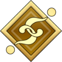

ROLEFORGE 0.71.0 · REAL SILLYTAVERN 1.19.0ไอคอนคลาส NPC และหน้าพลัง
ภาพจากส่วนเสริมจริงบน SillyTavern ในโปรไฟล์ทดสอบแยก แสดงไอคอนภาพที่เลือกใช้ได้และหน้าพลังแบบกระชับ ใช้หลอด Resource เดิม ไม่เพิ่ม Custom Status แยกใหม่
คู่มือใช้งาน · ผลทดสอบ
ชุดภาพ Servant ของ gears
161 ภาพจากไฟล์ที่ผู้ใช้ส่งมา ภาพเดิม 128px แบ่งเป็น 6 ชุด เลือกได้โดยไม่เปลี่ยนภาพใบหน้าหรือตั้งค่า Stats ให้ตัวละครอัตโนมัติ
Classic
Lover
Watcher
Ruler
Launcher
.png) Stranger (Wf)
Stranger (Wf)Unknown
Extra
Mooncancer
Shielder
Archer
Rider
Saber
Gunner
Player
Brown

Binderquestioner.png) Stranger (Wf)
Stranger (Wf)Mooncancer
Player
Blue
Lover
Watcher
Ruler
Binderquestioner
Alterego
Berserker
Launcher
Assassin
Pretender
.png) Stranger (Wf)
Stranger (Wf)Lancer
Unknown
Extra
Faker
Funnyvamp
Mooncancer
Foreigner
Saver
Caster
Shielder
Gatekeeper
Archer
Avenger
Mourner
Rider
Binder
Saber
Voyager
Gunner
Dreamer
Player
Grand
Lover
Watcher
Ruler
Alterego
Berserker
Launcher
Assassin
Pretender
.png) Stranger (Wf)
Stranger (Wf)Lancer
Unknown
Extra
Faker
Funnyvamp
Mooncancer
Foreigner
Saver
Caster
Shielder
Gatekeeper
Archer
Avenger
Mourner
Rider
Binder
Saber
Voyager
Gunner
Dreamer
Player
Anti-Servant
Anti Gatekeeper
Anti Lancer
Anti Rider
Anti Watcher
Anti Saber
Unknown
Extra
Anti Shielder
Anti Mourner
Anti Avenger
Anti Ruler
Anti Player
Anti Berserker
Anti Lover
Anti Gunner
Anti Binder
Anti Pretender
Anti Faker
Anti Dreamer
.png) Anti Stranger (Wf)
Anti Stranger (Wf)Anti Launcher
Anti Assassin
Anti Saver
Anti Voyager
Anti Mooncancer
Anti Caster
Anti Archer
Anti Alterego
Anti Funnyvamp
Anti Foreigner
Beast
Juvenile
Iii
I
Vi
Vii
Ii
Iv
None
V
Artwork: gears · เครดิตและแหล่งที่มา